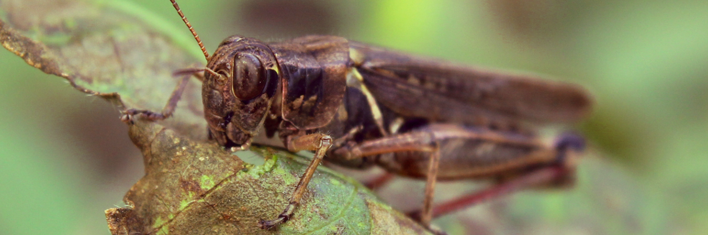

Phase 2/3 Course Goals
1. Foster the creative habits of mind
I did my most creative work during this period on the pfoto essay, the B-roll challenge, and the title sequence. For all of these, I continued working towards creating a mysterious atmosphere with each project. With the B-roll footage, I wanted to create something like a recurring dream I have had where I have visited a gilded attic. Though the result is quit different, I feel that I succeeded.
2. Engage with others in a workshop environment
During these phases, we did a lot of work talking about our research in small groups, and this helped me get some of my ideas straight. I am sure it helped other people as well. Also when we presented the B-roll footage, I went over how I obtained the color effects in my film and how I set up my timeline with the rest of the class. I really enjoy doing this kind of thing, showing others how they can improve their own work.
3. Think deeply about craft
This caused me trouble during Phase 2 and 3, as I spent so much time thinking over how I would execute several of these ideas. With the After Effects Animation and the Title Sequence, I wanted to have something pragmatic and useful. I am satisfied with what I achieved with these, though the results, to me, felt very standard. I find them to be quite usable though. With the interview, I spent a lot of time trying to set up the shot. The final result was not my best work, in my opinion, but I did learn a lot from the experience. The lighting seemed okay when I was shooting it, but it was too dark in Premiere Pro. I actually went in and added digital lighting effects to get a better result.
4. Engage in sustained research and skills development.
Since I was unfamiliar with Premiere Pro, After Effects, and the Character Animator, I had to learn to use these during these phases. After Effects was similar to Hitfilm Express, which I use in my free time. The others were totally new to me. I had to watch YouTube videos to get the different effects and techniques down correctly. This was especially crucial for the animations, and I am really pleased to have learned these techniques. As mentioned already, I was worried about getting them correct, but once I studied how to do it, it became quite easy. After I had it down, I even helped a classmate with this too.
5. Learn to present your work
While in our groups, I took a leadership role. Often, others seemed anxious or hesitant to present their work, so I led the discussion and helped move it along. I often presented first or close to first. I think that I may have talked to much about what my work was before presenting it, so that is something to work on. I must learn to let the work represent itself, at least for a few moments for people to digest it, before going over the ins and outs of the creative process. It is important to describe that process, but people also need some time to breathe between that description and viewing the work. As mentioned, I did also present my timeline and the effects used for the B-roll project to the entire class during this phase.
Phase 4 Course Goals
1. Foster the creative habits of mind
Though I had a mostly complete idea for my project from early on, I realized, as we neared the deadline, that I really did not know how I would precisely present it, especially as I failed to get the interviews I needed or gain access to the Early American Room. I had particularly been depending on the latter. Once time was running out with no response from the Nationality Rooms team, I knew I've have to go with my planned interviews. I wasn't sure how to get those, but I was inspired when a classmate discussed taking b-roll footage for his project. I ended up just walking around campus doing that myself before I started doing the interviews. The b-roll wandering led to the interviews. The final kiosk project was set up by utilizing the provided template in a concise and clear manner. I took a look at what types of websites were there and went with what would work. The template really helped my ideas gel together.
2. Engage with others in a workshop environment
I helped several classmates with their projects several times in this phase. I helped people set up navbars and resize images. I also helped people hone their ideas for their project. The questions I got during my research presentation helped me hone my own ideas as well.
3. Think deeply about craft
I tried my best with little equipment and little time to make everything as polished as possible. For example, the interviews were done with no external microphone, no special lighting, and no script. I did my best to hold the camera still and made numerous edits in post. The biggest task was getting all of the captions in, since those were done by hand. I was glad to get them all typed out, but it took hours. All the audio was also edited to remove noise.
4. 4. Engage in sustained research and skills development
I think the biggest thing I learned during this phase was how to do interviews in the field. I was so anxious about doing them that I didn't for weeks. I made a Reddit post but only got one real response from it, so I had to approach people on campus. It became fun over time, even though a few people got upset with me. I had to be confident to roll with the metaphorical punches.
5. Learn to present your work
It was unusual to present my presentation to both the class and an online viewer. That was something I had never done before, so it was important to split my eye contact between the two worlds. Presenting the kiosk was easy enough, as I feel like it spoke for itself. It was important to take and respond to questions for both projects.

generated by Pitt Fuego
“Why make a spark when you can light a fire?